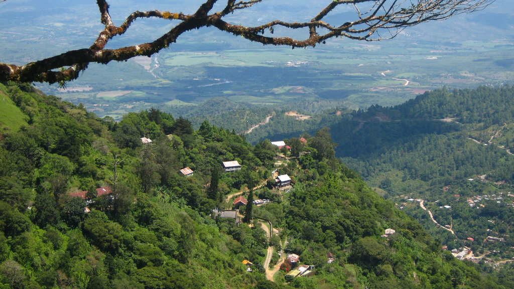
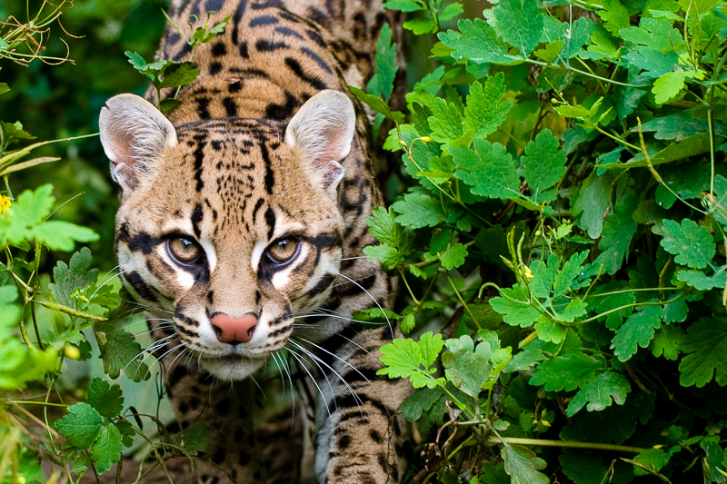

Fue declarado como reserva natural en 1952 y es el primer parque nacional en la Republica de Honduras. Cuenta la leyenda que todos los dias un campesino salio de San Juancito y pasaba por las impresionantes tierras del bosque.
El parque alberga gran diversidad de especies como:tucanes,monos,tapires,pumas quetzal y adenas alberga una gran cantidad de insectos y escarabajos.Los elechos son otra atraccion principal del parque que miden 20 metros de altura.

La tigra es un bosque nublado con una superficie de 328 kilómetros cuadrados (127 millas cudradas). Tiene una altitud de entre 1800 y 2185 metros. Esta ubicada a 25kilómetros (16 millas )de tegucigalpa, y con a mayoy extencion territorial.
Existe una organizacion civil llamada Amigos de la tigra(Amitigra) que se encarga de diversas actividades y quienes manejan y protegen el parque nacional la tigra.
